Setting Up the App
An Aether profile has the same fields on iPhone and Android. This page goes through them in the order the profile editor shows them.
The fields, defaults, footers and messages were read from the source code of both apps, and the screenshots were taken from them with example profiles and example keys. What each setting did in real connections is in Test results.
Add a profile
Tap + on the home screen, tap Protocol and choose Aether VPN (Cloudflare WARP — no server needed, automatic). A new Aether profile is in Public mode with the transport Both (H3 → H2), the endpoint scan Balanced and Tor Off; it can be saved as it is. In Private mode, Save names the first thing still missing instead of saving an incomplete profile: Enter the server address. or Import or enter a WireGuard configuration.
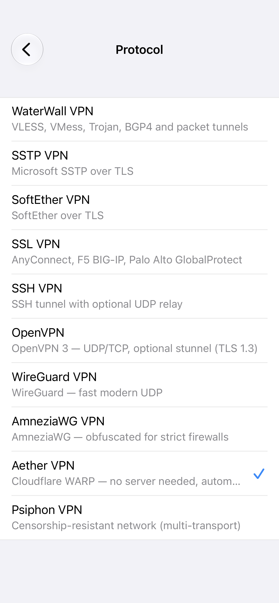
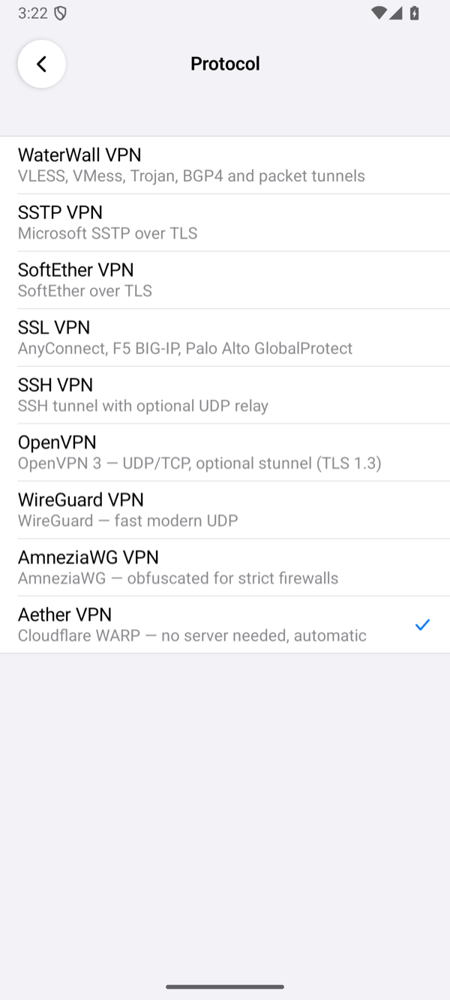
Public mode
Server chooses the mode: Public (WARP) or Private. In Public mode the phone needs nothing else; these rows choose how it reaches WARP:
| Field | What it does |
|---|---|
| Transport | How the tunnel to WARP runs. MASQUE (HTTP/3): Fast MASQUE transport over QUIC/UDP. MASQUE (HTTP/2): TCP+TLS, with optional TLS Fragmentation, for networks that block QUIC or UDP. Both (H3 → H2) (default): Try HTTP/3 first, then fall back to HTTP/2. WireGuard: Classic Cloudflare WARP over UDP; the app then runs the connection to WARP with its own WireGuard, as a WireGuard profile does. |
| Endpoint Scan | How the engine picks a WARP endpoint: Balanced (default) compares more candidates, Turbo takes the first one that answers. |
| WARP+ License | Optional. A WARP+ license key, bound to the phone's WARP identity when it connects. When the binding fails, the connection goes on with free WARP and the log says so. On iPhone the app keeps the key in the Keychain, on Android in its encrypted store, and no log writes it. |
| Tor | Off (default). WARP via Tor dials the tunnel to WARP through the Tor network, so WARP sees a Tor exit instead of the phone's address; it runs over MASQUE on HTTP/2 whatever Transport says, and it is slow to connect. Tor Only sends the traffic out through Tor, without WARP; Transport, Endpoint Scan and WARP+ License then disappear. |
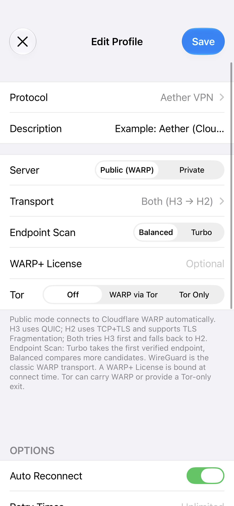
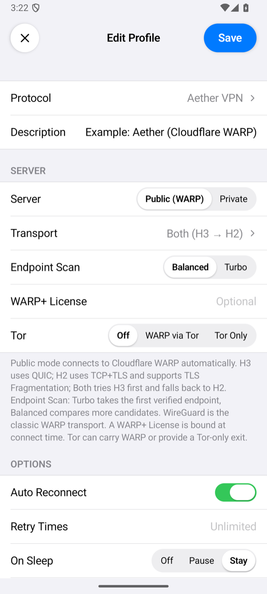
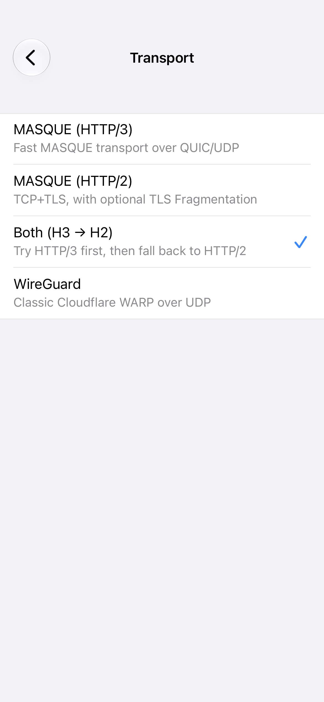
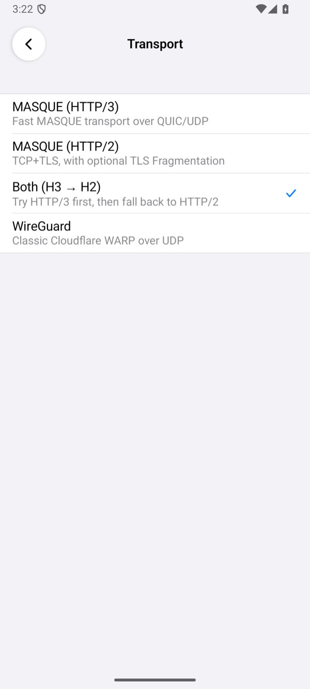
Private mode
In Private mode the profile is the phone's WireGuard connection to your server. There are two ways to give it the phone's keys, and an imported file wins over keys entered by hand:
- Import Config (.conf) opens the phone's files. The app takes a file in wg-quick format, as the server guide makes it. It refuses a file without an
[Interface]and a[Peer]section: The file does not look like a WireGuard config (no [Interface]/[Peer] sections). It also refuses an AmneziaWG file, because the server speaks plain WireGuard: This file has AmneziaWG settings (… and others). Aether's Private mode takes a WireGuard file. After an import, the row says Imported, and Server and Port fill in from the file'sEndpointline. - Manual Configuration takes the same values one by one, as for a WireGuard profile: the phone's Private Key (or Gen for a new one, whose public key you add to the server), its Address, and the server's Public Key, Preshared Key and the others.
- Server and Port are your server's name or address and its WireGuard port. An import fills them in from the file; if you change them, your values replace the file's.
The phone's address must be IPv4. The app reaches the engine at the first address of that address's network, port 1819: 10.66.66.1:1819 for a phone with 10.66.66.2, as the server guide sets it up. The file and the keys are this phone's secrets: on iPhone the app keeps them in the Keychain, on Android in its encrypted store.
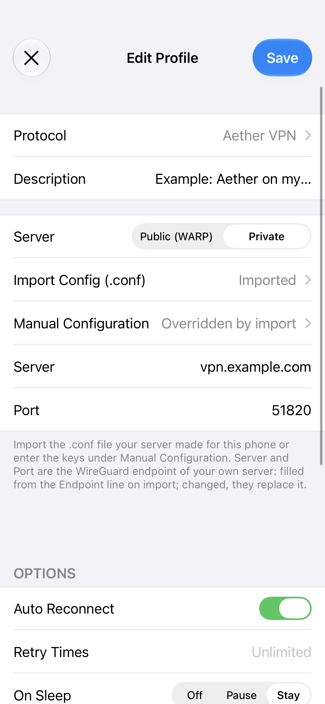
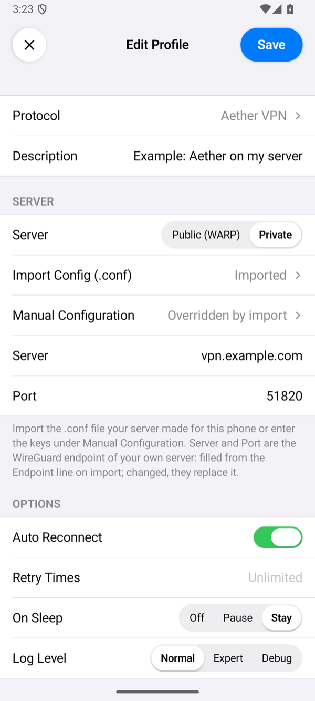
Options
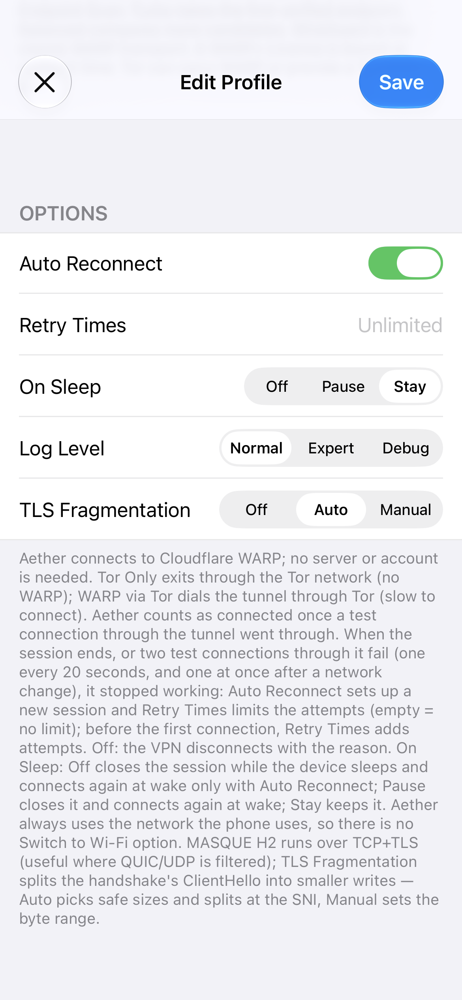
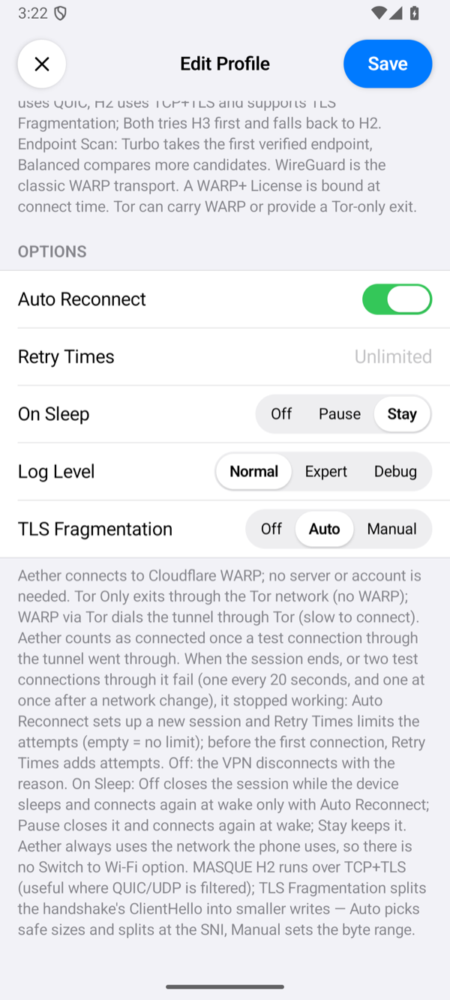
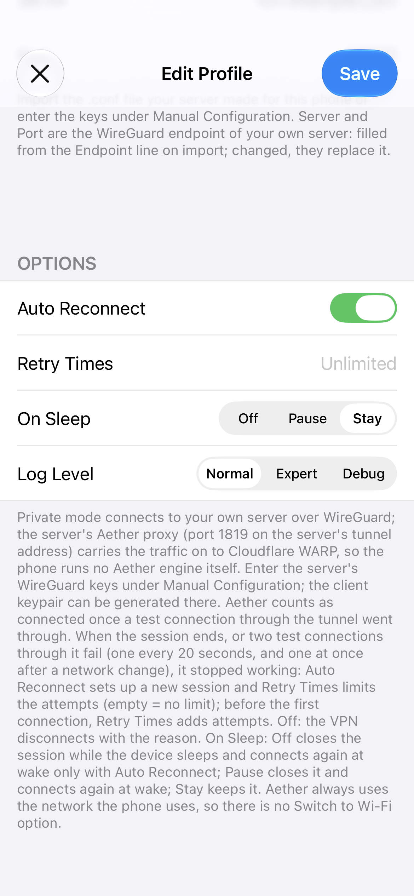
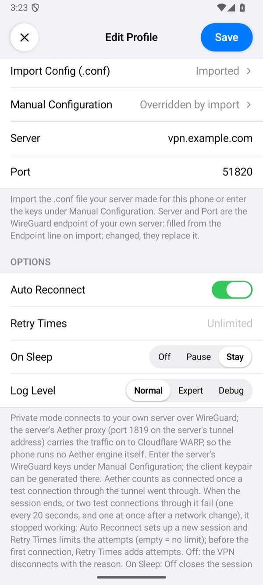
| Option | What it does |
|---|---|
| Auto Reconnect, Retry Times | The app counts as connected once a test connection through the tunnel went through. It sends one every 20 seconds, and one at once after a change of network. When the session ends, or two test connections in a row fail, the tunnel has stopped working. A test connection that fails while the tunnel is busy does not count: one after which at least 64 KB came back through the tunnel since the previous test. Auto Reconnect (on by default) then sets up a new session, 2 seconds after each failed attempt; Retry Times limits the attempts (empty means no limit). Before the first connection, the app makes one attempt, plus Retry Times more with Auto Reconnect. Without Auto Reconnect, the VPN ends with the reason. With the WireGuard transport, the app's WireGuard does this with its own handshake check, as for a WireGuard profile. |
| On Sleep | Stay (default) keeps the session while the device sleeps. Pause closes it and connects again on wake. Off closes it; on wake it connects again only with Auto Reconnect, otherwise the VPN ends with The connection was closed while the device slept. |
| Log Level | How much the connection log shows. Normal: the milestones: the mode and transport, the options, the endpoint, the session, network changes, and why a connection ended. Expert adds a line for each test connection that went through, with the session's age and the bytes that went each way. Debug adds the engine's own lines and one for each connection through the tunnel. No level writes a key or the WARP+ license. Tap the status under the power button to open the log. When the app gives up on a connection, a line starting with Aether: closing with reason: says why. |
| TLS Fragmentation | Only in Public mode with MASQUE on HTTP/2, or both, and not with Tor Only. It splits the ClientHello of the TLS handshake into smaller writes. Auto picks safe sizes and splits at the server name; Manual sets the range with Min Chunk and Max Chunk (bytes, 32 and 256 when empty). |
There is no Switch to Wi-Fi When Available: Aether always uses the network the phone uses, and after each change of network the app tests the session at once.
Connect and check
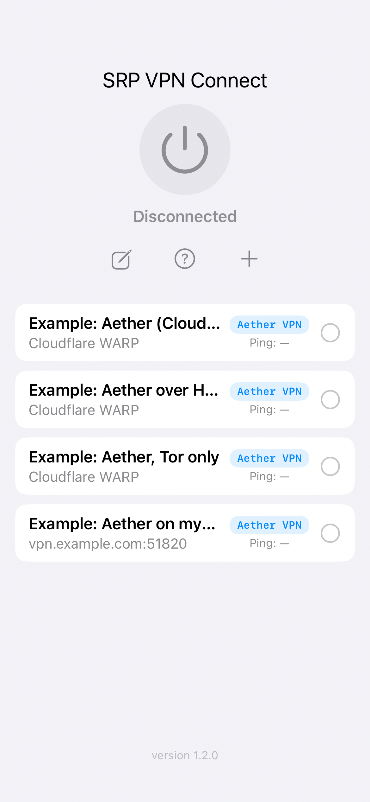
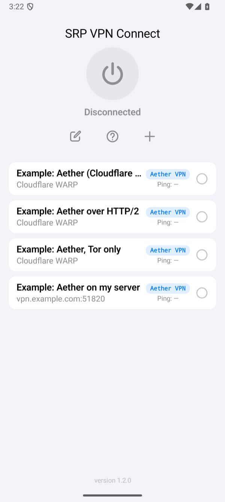
On the home screen a profile in Public mode shows Cloudflare WARP and one in Private mode its server and port. Select the profile and tap the power button. The status changes to Connected once the first test connection through the tunnel has gone through: within seconds over MASQUE, and in up to about half a minute with Tor in our runs. The row of the profile then shows the time of one request through the tunnel. If the app cannot connect, it shows Connection Failed with the reason; Troubleshooting explains each message.